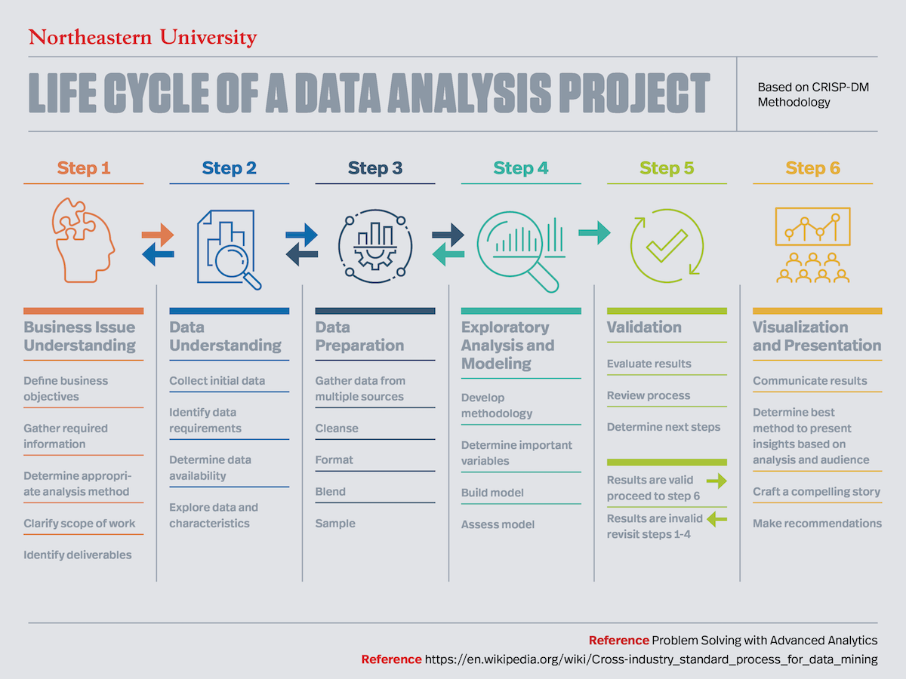

Welcome to the Data Analytics Spec Trial Day
Introduction to the Data Analytics Specialization
Background
Now more than ever, data is all around us. It comes in various forms and ranges from formal research studies to consumer profile data and everything in between. Organizations in both private and public sectors use data to answer questions and solve problems. Your job as a Data Analyst would be gathering, preparing, and analyzing data, then communicating your findings with your organization to make better, more informed decisions.
Further down the road, a career in data can lead to data engineering roles, which entail the back end work of extracting, transforming, and loading large amounts of data into digestable information ready to be analyzed, or data science roles which take data analysis to the next level of machine learning and artificial intelligence.
Introduction to Specializations
During Specializations, you will take a huge step towards your career in tech by not only attaining skills in a particular technology area or stack, but also by getting accustomed to a new work style that resembles the way you will work and learn in your first job. Your coding bootcamp experience is technically over, and now you will begin your journey within the technology industry.
Throughout your career as a Data Analyst/Engineer, you will need to continue to learn and gain new skills. Developers will do this by carefully researching new technologies, following online video tutorials, and practicing learned concepts. We designed the Specializations program to mimic that learning experience. To do this, we’ve leveraged a combination of video learning and carefully curated exercises. We also provide support through multiple avenues including: daily stand-ups with your Tech Lead, weekly review sessions, weekly one-on-one meetings with your Subject Matter Expert (SME), and queue support during your class hours.
While this new learning environment will help prepare you for your first role and continued learning, it will also present unique challenges for you to conquer. Some of these challenges include: time management, self-awareness, and video fatigue. Overcoming these challenges at Devmountain, while you have support, will help build the foundation for your growth as an engineer.
What You Will Learn
This course prepares students with the knowledge and skills to start a career as a Data Analyst, providing all requisite knowledge of data investigation, modeling, visualization, interpretation.
In this course, you will learn about the following:
Git & Github
Linux
Python
SQL
Jupyter Notebooks
Pandas
Splunk
Data cleansing
Data interpretation
Data modeling
Data visualization
Staff During Specializations
Tech leads provide guidance, industry knowledge, and leadership during Specializations. They are the primary leader throughout the day for students and ensure that students are progressing with the support that they need. Tech Leads manage 1-2 technical programs and communicate directly with Subject Matter Experts to escalate student questions. They run daily Scrum Meetings, check in with students frequently, and monitor student progress. They also help to maintain and update curriculum for their area(s).
Fun Fact: The role of the tech lead is modeled after the Team Lead in the tech industry. A Team Lead is traditionally someone who is both an individual contributor but also coordinating with team members and tracking and driving overall progress. While Team Leads are proactive in their communication, it’s also important for the rest of the team to be proactive in keeping the Team Lead up to date on blockers, progress, and other general information. Tech leads do this and that…
Subject Matter Experts answer student questions and provide feedback to students on their comprehension of the material during weekly meetings. You can expect at minimum one hour of one-on-one time with a SME each week during specialization, in addition to any escalated questions you have the SMEs might answer either individually or with the group based on collaboration with the Tech Lead.
Fun Fact: The SME role is modeled after Senior Engineers and SMEs (same name) within the tech industry. In a real engineering org, SMEs and Senior Engineers are called upon to enable mid or junior level folks when they run into blockers. As part of Specializations, you have the oppportunity to work with real Subject Matter Experts with years of experience in the tech industry. Not only will you learn things from them, you will also learn how to advocate for yourself effectively. Working with SMEs on a less frequent basis than staff during Foundations will enable you to build independence and confidence that will be invaluable when you begin your first role within the tech industry.
Your Data Analytics Team
Below are some of the amazing staff that you’ll be working with during Specs!
Stetson Done - Data Tech Lead
Get to Know Stetson: I have a partner and two daughters (4 year old and 2 year old) who I love hanging out with. I love anything outdoors - camping, hiking, swimming, etc.
Advice from Stetson: You don’t have to have a background in math or statistics to learn data analysis. Remember, the computer does calculations the for you. Your job is to prepare data to analyze and then interpret those results.
Favorite thing about work: I love helping people learn new things! I love to empower others. I will always provide a safe, non-judgemental space to help support students through their learning journey.
Mansi Parikh - Data Subject Matter Expert
8 years experience with Data Science & Analytics
Currently Data Scientist at Not Applicable
Kinkade Darling - Python Subject Matter Expert

4 years experience with Python Data Analysis
Currently Business Intelligence Engineer at National Trust for News
Former Instructor & Data Engineer for University of Utah
Matt Spinelli - Data Subject Matter Expert

18 years experience with Software Engineering & Data Analytics
Currently Founder & Managing Technical Director at Poly
Trial
Structure
Complete a mini crash course on Python and data analytics by working through the videos provided below.
You’ll then complete your own project by walking through a lab highlighting each part of the data analytics project lifecycle.
Reflect on your experience.
If you get stuck at all or need any help - reach out in the queue! The specialization tech leads will be waiting to help you.
Watch: Python
Python Trial
If you already completed the Python trial, feel free to skip this section.
In foundations, you’ve been working with JavaScript, which is an object oriented programming language. Python is another common object oriented programming language which is used (in part) for machine learning, artificial intelligence, and data science.
While the Data Analytics program does not focus as heavily on Python software egineering, it does use Python throughout the program to manipulate and analyze data.
For an introduction to Python, go to this video using your new Pluralsight login:
Python: Variables, Data Types, and Conditionals with Sarah Holderness
Don’t install Python yet…
Do not install Python prior to completing this interactive video lecture. There will be a IDE (similar to Replt) for you to complete the interactive sections. You will install Python as part of the Anaconda package with further instructions later on.
Read: JS and Python
In addition, you can check out this article on the differences between JavaScript and Python syntax. You won’t need to understand or remember all of this for today, so feel free to skim. We just want you to get a small feel for the differences in the languages before you begin.
Again, this is a brief overview. However, you should be able to follow along better than most because of your strong foundation in JavaScript!
Watch: Jupyter Notebook
In the Data Analytics specialization, the first week dives deeper into Python before you move into data analysis with Python.
Up to now, you’ve been working in VSCode for your projects. Today we will be using an application called Jupyter Notebook, which is standard in the field of data science.
To learn the basics of Jupyter notebook, you’ll watch Part 3 of this video on Pluralsight -
Getting Started with Jupyter Notebook and Python by Douglas Starnes
When you open the video, use the navigation bar on the right of the screen to watch Part 3 called “Moving from the REPL to a Notebook” (24 min 20 sec)
Do not code along
You do not need to code along during this video. Further instructions will be provided to install, set-up, and complete everything you need to do for the project today. For now, just sit back and enjoy the brief overview of how to use Jupyter Notebook.
Read: Data Analysis Crash Course
To begin, we’ll go over the data analysis lifecycle, which outlines the steps we must take in every data analysis project.
Data Analysis Lifecycle
Every data analysis project goes through a process known as the Data Analysis Lifecycle.
This process is cyclical and one project may iterate through the different steps several times before reaching completion. The lifecycle consists of the following steps:
Define the question or identify the business issue.
Set Initial Requirements
Prepare Data
Explore and Analyze Data
Validate Findings
Communicate Results
The following graphic is from Northeastern University which does a good job of visualizing the process:
Lastly, read this article on Pluralsight to for a great explanation of how we’ll accomplish the steps outlined above. (10 min read)
Project Setup
Now you’re ready to begin! Follow instructions below to install your materials and get started on the project.
To begin, you’ll need to install Anaconda, which is a package manager for data science projects. Installing Anaconda will automatically install Python on your system if you don’t have it already. It will also automatically install Jupyter Notebook and all other libraries we will be using today. Follow the steps below for your respective operating system.
Step 1 - Install Anaconda
Windows Installation: Follow the Anaconda docs to install Anaconda on windows here
Mac Installation: Follow the Anaconda docs to install Anaconda on macOS here
Step 2 - Download files for project
Download the exercise materials here (these are the same materials from the link on Frodo’s home page or exercises page)
Step 4 - Launch Jupyter Notebook
Find the Jupyter Notebook icon and click “Launch”
Step 6 - Open data_analytics_spec_trial.ipynb
Once you find the folder you downloaded, click the data_analytics_spec_trial.ipynb file to begin your project!
Step 7 - Reflect
In a personal document, write down some of your thoughts on Data Analytics.
What did you like about Data Analytics? What didn’t you like?
What would pursuing Data Analytics look like for you?
Congrats!
Nice work! You’ve completed the Data Analytics Spec Trial Day. You should now have a better understanding of what Data Analytics is all about and if it’s the specialization that you’d like to pursue. If you have questions, please reach out to the Data Analytics Tech Lead.